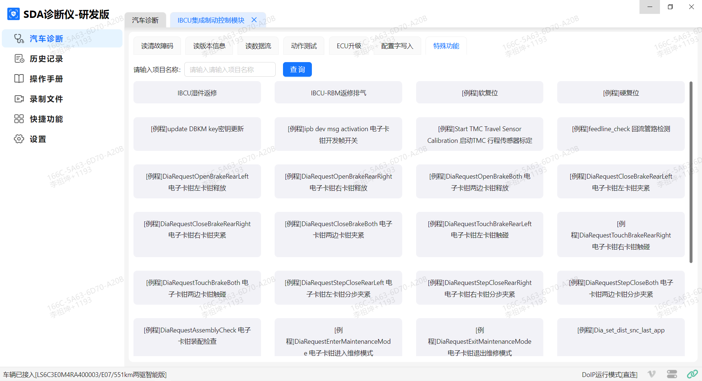
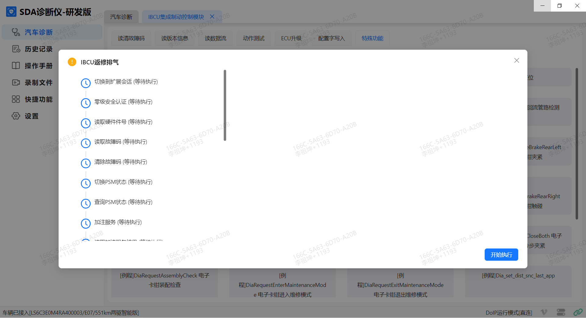
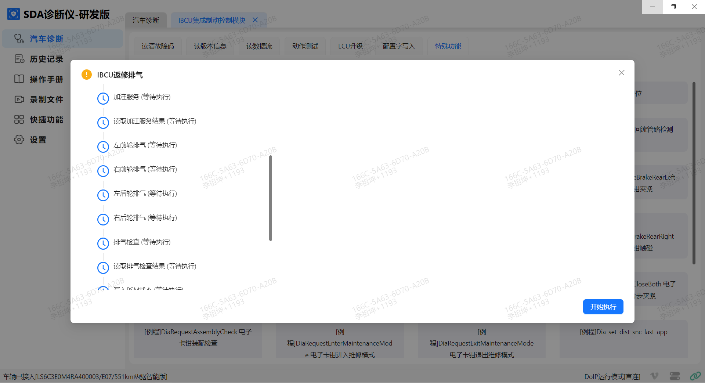
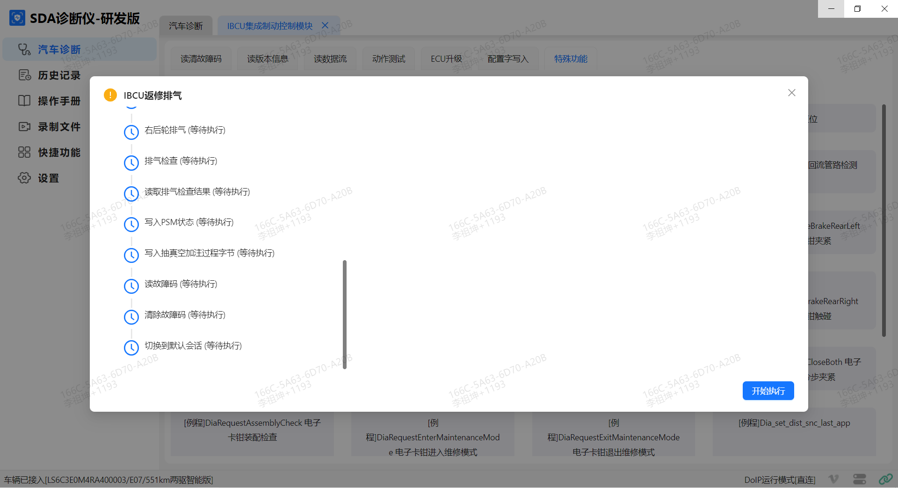

制动液含有聚乙二醇醚与聚乙二醇，避免接触眼睛和皮肤。
如果制动液接触到眼睛，用水龙头的冷水冲洗眼睛15 min。如果仍然感到疼痛，须迅速就医。
如果接触皮肤，须彻底的清洗。
如果不慎吞下，需喝水并催吐，并立即送医。
佩戴安全眼镜。
如果制动液溅到漆面上，立即用清水冲洗。
确保汽车停放在水平的路面上。
按如下顺序进行排气：左后、左前、右前和右后。
排气时，制动液储油罐必须保持添加新的、清洁的制动液，确保制动液位保持在刻度线之间中间偏上位置。
放气螺栓需一直处于 完全打开状态，直到单一车轮的排气结束才能拧紧。
使用故障诊断仪的“IBCU加注排气”操作来控制集成制动控制模块中泵阀动作，以便从辅助油路中清除空气。集成制动控制模块具有两套不同液压回路，在车辆上电和下电时液压流向不同回路。“IBCU加注排气”程序保证两条回路及阀体内部能充满制动液。
车辆排气步骤实例
打开制动储油壶总成盖，在制动储油壶下方放好抹布，防止制动液流淌至其它部件上。
将透明排气管的开口端接到左后分泵排气孔上，将透明排气管的开口端接到左后分泵排气孔上，将排气管的另一端浸入透明排气瓶内的制动液中。
将排气瓶放在至少低于排气孔300 mm处，以保持液压并避免空气经由排气孔的螺纹进入管路。
举升汽车。 参考 举升
车辆上电，通过OBD口连接诊断仪，通过故障诊断仪与集成制动控制模块建立通信，点击诊断仪→汽车诊断→IBCU集成制动控制模块→特殊功能→IBCU加注排气。

进入“IBCU加注排气”程序后，按照诊断仪提示依次点击开始执行或下一步。
例程如下：
（1）切换到扩展会话模式
（2）零级安全认证
（3）读取硬件件号
（4）读取故障码
（5）清楚故障码
（6）切换PSM状态
（7）查询PSM状态
（8）IBCU排气服务
（9）读取IBCU排气服务结果
（10）左前轮排气
（11）右前轮排气
（12）左后轮排气
（13）右后轮排气
（14）排气检查
（15）读取排气检查结果
（16）写入PSM状态
（17）写入加注结果
（18）清除故障码
（19）读取故障码
（20）切换到默认会话



PSM状态完成切换后，IBCU将处于无助力状态。
在执行IBCU排气服务时，集成制动控制模块会自动进行排气操作，可以听到IBCU内部有气压放气声，属于正常现象按照步骤执行。 注意此过程禁止踩制动踏板。
读取IBCU排气服务结果，如果诊断仪显示成功，则排气完成，如果不成功，则需等5min再通过指令排气方法重新开始排气。
以左前轮排气为例，打开左后轮排气螺钉，且排气螺钉开度尽可能大，匀速踩到底后再匀速完全松开制动踏板（如果踩的过程遇到阻力不能硬踩），踩踏板过程中加制动液，诊断仪显示结束后 继续脚踩1min，通过软管观察制动液，直到软管中看不到气泡，随后踩住踏板并锁紧左后轮排气螺钉再松开踏板，分离透明软管，左后轮排气结束。（左前，右前，右后轮的排气方式同左后轮），按故障诊断仪的指导进行操作，完成集成制动控制模块四轮轮端排气操作。
在执行排气检查服务时，集成制动控制模块会自动进行排气检查操作，可以听到IBCU有工作声，属于正常现象按照步骤执行。 注意此过程禁止踩制动踏板。
读取排气检查结果，排查空气含量是否合格，如不合格，需重新排气
第18和19步清除故障码，读取故障码，无任何故障码则按步骤正常执行。若有“制动硬管泄露”、“制动管路空气过多”等故障码，则需要检查制动管路是否有泄露，然后重新进行10-20步执行操作。
降下车辆，排气完成。